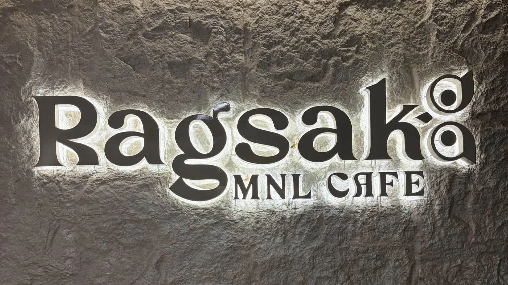
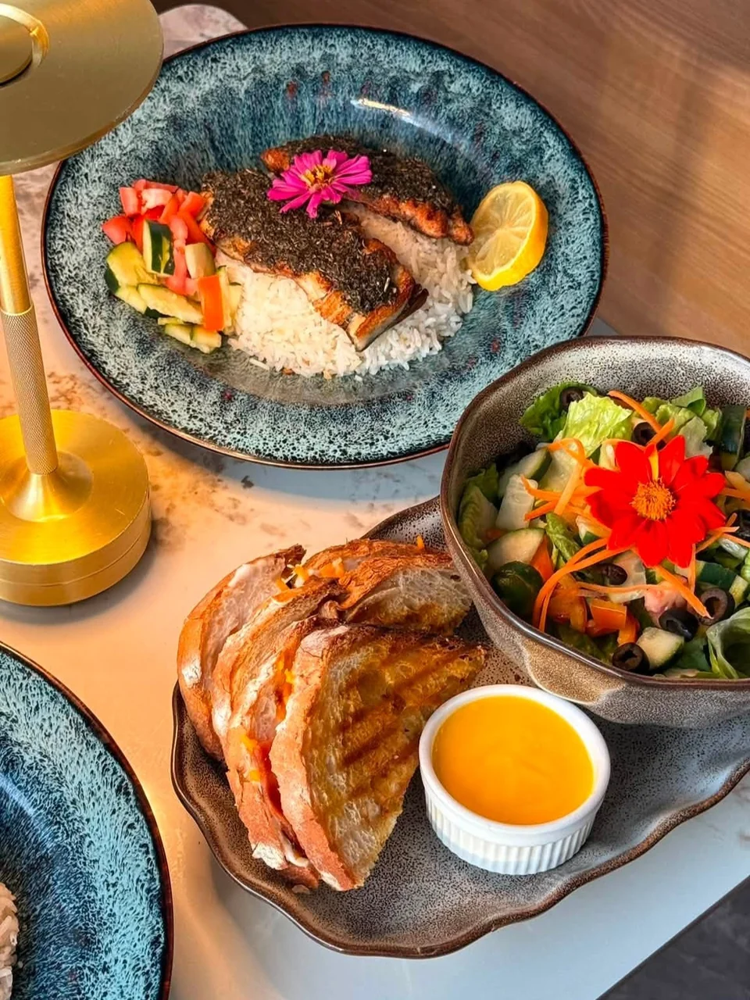

SAMPALOC, MANILACOFFEE · CROISSANTS · GOOD COMPANY
YOUR LITTLE PAUSE IN MANILA
A little pause.A lot to love.
Coffee in your cup. Something sweet on your plate. Make a little room for Ragsak.
MAKE A LITTLE TIME FOR YOURSELF.Explore Ragsak

A CLOSER LOOK
Make time
to gather.
A warm lamp, a patterned tabletop, and plates gathered together. A closer look at the little details around a shared table.
Take a pause between errands, or make time for conversation over coffee. A little moment together can be the best part of the day.
Watch a café moment on InstagramLITTLE MOMENTS
Good things,
in good company.
A few details from the café’s photographed tables.
Follow along on Instagram


FIND THE CAFÉ
1276 Maceda StreetBarangay 514, Sampaloc
Manila, Philippines